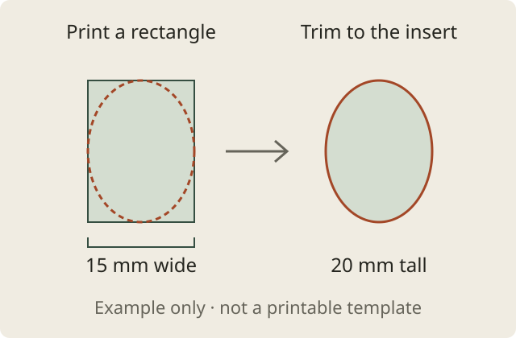

How to print locket photos from iPhone at the right size
By Mohamed Elatabany · Updated 26 October 2026
To print a locket photo from iPhone, measure the photo insert, make a rectangular print at those dimensions, then trim it to the insert’s shape. Print a test at 100% / Actual size and check it with a ruler before cutting the final photo.
A locket needs a small physical print, not just a smaller image file. This guide covers the measurement, a custom-size sheet in Photo Print, and a PDF option for a print shop.
1. Measure the insert, not the outside of the locket
Start with the maker’s instructions. If the locket came with a paper insert or removable photo template, use that to establish the shape and size. Otherwise, measure the internal space where the photo sits, in millimeters. The outer pendant dimensions include metal and are usually too large.
Record the widest and tallest parts of the insert. A round insert needs a square print whose sides match its diameter; an oval needs a rectangle matching its width and height. Leave the final curved cut until after printing.
The visible window can be smaller than the insert held behind its rim. Keep eyes and other important details away from that rim. Astley Clarke’s replacement-photo guidance notes that even individual lockets can need small trimming adjustments, so test the fit with ordinary paper first.
A 15 × 20 mm example below is a worked example, not a recommended size for every locket. Use your own insert measurements or the maker’s template.
2. Choose a portrait and a printing method
For a quick print, Apple’s built-in route is Photos → open the photo → Share → Print. Apple documents these steps for AirPrint. Check the options your printer exposes; this route may not give you the custom millimeter dimensions a locket needs.
For a measured sheet, Photo Print lets you enter width and height independently, arrange copies on normal paper and export a PDF. Start with the original photo where possible. A clear face against a simple background is easier to recognize at this scale than a wide group picture.
3. Set the custom print size in Photo Print
- In Settings → Unit, choose millimeters if that is how you measured the insert.
- Create a layout and add your chosen photo. Open that photo’s editing screen.
- Under Print size, enter your measured Width and Height. For a 15 × 20 mm oval insert, enter 15 mm wide and 20 mm high.
- Choose Fill in the fit controls, then adjust the crop so the face sits comfortably inside the area you will keep. Fill covers the rectangle and can crop the original. Fit preserves the whole image but can leave blank space.
- Set Copies to two or three for trimming practice. On the page settings, choose the paper actually loaded in your printer, with space around the photos. Leave the photo border at zero for an edge-to-edge portrait.
- Review the sheet before exporting. The app keeps your chosen physical sizes; photos that cannot fit the page are reported.
Photo Print makes rectangular prints. It does not create a locket-shaped cutting mask. For a heart, oval or circle, use the original insert or the maker’s template to mark the final outline by hand.

4. Check the numbers: a 15 × 20 mm example
Suppose your removable oval insert measures 15 mm across and 20 mm tall. That is 1.5 × 2 cm, or approximately 0.591 × 0.787 inches. A 1 × 1 inch preset would be 25.4 mm square, so it is too large for this example.
| Item | Target |
|---|---|
| Rectangular print before trimming | 15 × 20 mm |
| Same size in centimeters | 1.5 × 2 cm |
| Visible pixels for at least 300 PPI | 178 × 237 pixels |
| Final outline | Trace your actual oval insert |
The pixel target is calculated as millimeters ÷ 25.4 × 300, rounding each result up. It applies to the visible crop, not the entire original photo. Use the photo-size calculator for other measurements. Pixel count alone cannot fix blur or a poorly focused face.
5. Print a proof at actual size
Print one test sheet on ordinary paper before using photo paper. With AirPrint, confirm the selected paper matches the loaded sheet. If the dimensions are wrong or scaling options are unavailable, export a PDF and use a print dialog with explicit scale controls.
In desktop Acrobat, choose Size → Actual size. Adobe explains that Actual size prints without scaling, while Fit adjusts the page to the printable area. Keep the small photos inside the printer’s margins.
Measure both sides of the printed rectangle. In this example, it should be 15 mm wide and 20 mm tall. If a side measures 18 mm instead of 20 mm, the output is 90% of its intended size. Check paper and scaling settings rather than changing the photo dimensions to compensate. The printer test sheet and ruler helper can help diagnose this.
6. Trim the outline and check the fit
Lay the insert over your proof, position it around the face and trace the outline lightly. Cut carefully, test it in the locket and trim a little more if needed. Avoid forcing paper under a delicate rim. Once the proof fits, repeat with your final print, following the maker’s paper and fitting instructions.
No home printer? Take the PDF to a print shop and request the matching paper size at 100%. If the shop only accepts JPEG photo orders, use Photo Print’s No printer? Use a photo lab option for a 4 × 6 inch sheet. Confirm the lab prints the entire sheet without scaling or cropping, then measure the small portrait on arrival. See the actual-size print-shop checklist.
Locket photo questions
What size should a locket photo be?
Use the dimensions of the photo insert or the maker’s template. Locket photos have no universal size; the outside dimensions of the pendant are not the photo dimensions.
Can I print a heart-shaped locket photo?
Print a rectangle large enough for your actual heart-shaped insert, keep the face inside its outline, then trace and cut the shape by hand. Photo Print does not generate a heart-shaped cutting mask.
Can I just resize the photo in pixels?
Pixel dimensions alone do not set the physical print size. Set the width and height in millimeters, centimeters or inches, then print the sheet without scaling.
Written by Mohamed Elatabany, developer of Photo Print. App steps were checked against the app’s controls; printer and locket fit vary. Sources checked 26 October 2026. Send a correction or ask for help.